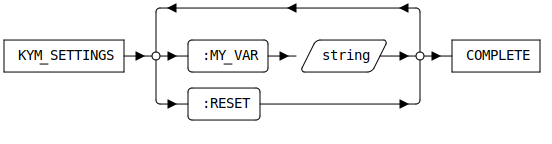

KYM_SETTINGS [Public Dialog]
Package: keysight-migrator (Nick name(s): :kym)
Edit customizable settings for the ky_migrator extension module.
The settings dialog can be activated by
- Selecting the command: File -> Settings -> Extensions -> :MODULE-TITLE. from the Modeling top menu bar..
- Typing
KYM_SETTINGSinto the Modeling command line.
Note: Settings changed by this dialog override settings loaded from kym_customize.lsp!
Dialog

- TODO: describe UI
- Reset the settings to the startup configuration.
Syntax

Options
:MY_VAR- TODO: Describe dialog variables.
:RESET-
Reset all values to the factory default.